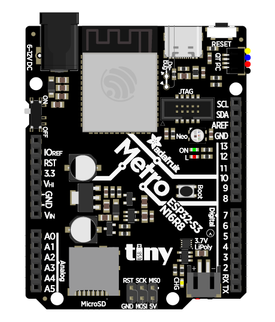

Wire up the Metro ESP32-S3.
Each AstrOs node is an Adafruit Metro ESP32-S3. This chapter maps out exactly which pins do what, and how your servo boards, displays, sound boards and switched outputs connect to it.
It has the pin count AstrOs needs (multiple hardware UARTs, I²C and plenty of GPIO), native USB-C
for flashing, and a STEMMA QT connector so the I²C bus is solder-free. The pin numbers below
are baked into the firmware's metro_s3 build — you don't configure them at runtime.
The Warpcell shields are a convenient way to wire up your Metro ESP32-S3. They simplify the process by providing easy-to-use connectors and are designed to work seamlessly with the Warpcell ecosystem. The below information is still a useful reference, but you may not need to follow it exactly if you're using the shields.
§The pinout at a glance
Here's what AstrOs uses on the board. Pins are colour-coded by function — match the colours to the connection guide below.

§What connects where
The I²C bus — display
Your OLED and other I²C devices all share the single I²C bus on SDA (IO 47) and
SCL (IO 48). Because the Metro has a STEMMA QT connector, you can daisy-chain
STEMMA QT devices with no soldering. Each device needs a unique address. The OLED has a default address of 0x3C (60).
- SSD1306 OLED — a small status display for the node's role and health.
The serial channels — sound & smart peripherals
AstrOs uses two serial channels (the pins for a third are reserved in the build but not active):
- UART 1 (
TX 40 / RX 41) — On the master node this is the AstrOs interface link that connects to the server (and only the server). Padawan nodes can freely use it to communicate with serial peripherals. - UART 2 (
TX 17 / RX 18, a.k.a. A3/A4) — A free serial channel for a peripheral such as a sound board or a Pololu Maestro.
GPIO outputs
Ten general-purpose pins, D2 through D11 (IO 2–11), are driven
as on/off GPIO outputs — perfect for relays, smoke machines, simple lights, or anything you switch
from an animation.
Serial connections require 3 wires: transmit (TX), receive (RX), and ground (GND). The TX pin of one device connects to the RX pin of the other, and vice versa. Always connect the GND pins together to establish a common reference. On the Raspberry Pi, the UART pins are labeled TXD (pin 8) and RXD (pin 10), with GND on pin 6. To connect the master node to a Raspberry Pi, connect the TX of the master to the RXD of the Pi, the RX of the master to the TXD of the Pi, and GND to GND.
I²C connections require 3 wires: data (SDA) and clock (SCL), plus a common ground (GND). Unlike Serial connections, the SDA and SCL pins of each device connect to the corresponding pins on the controller (the node's Metro). Always connect the GND pins together to establish a common reference.
§Full pin assignment
The authoritative reference, straight from the firmware's metro_s3 build flags. Silkscreen
is the label printed on the board; ESP pin is the chip pin number used in code.
| Function | Silkscreen | ESP pin | Used for |
|---|---|---|---|
| I²C SDA | SDA | 47 | OLED (data) + I²C peripherals |
| I²C SCL | SCL | 48 | OLED (clock) + I²C peripherals |
| UART 1 TX | TX | 40 | Interface link — transmit |
| UART 1 RX | RX | 41 | Interface link — receive |
| UART 2 TX | A3 | 17 | Serial peripheral — transmit |
| UART 2 RX | A4 | 18 | Serial peripheral — receive |
| GPIO 0–9 | D2 – D11 | 2 – 11 | 10× general-purpose outputs |
| Mode | A5 | 1 | Mode button — wake display, pair, factory-reset (input) |
§ESP32 Mode Button
The ESP32 Mode Button allows you to switch between different operational modes. Tapping the button temporarily brings the OLED display to life, showing the current name of the node. Holding the button for 5 seconds toggles Discovery Mode — the mode used to pair nodes (see Pairing Nodes). Holding the button for 10 seconds performs a factory reset.
Wire it active-high: the button feeds 3.3 V into the input pin when pressed, and a 10 kΩ resistor pulls the pin to ground the rest of the time so it never floats.
§Powering it safely
The single most important wiring rule in any droid: don't run your servos off the board's logic power. Servos draw big, spiky currents that will brown out the ESP32 and cause random reboots.
Feed servos and high-draw peripherals from a dedicated 5V BEC/UBEC sized for the load. Power the Metro's logic from its own regulated power supply (5VDC - USB, 6-12VDC - Barrel Jack). Then tie all grounds together — the servo supply, the BEC and the Metro must share a common ground, or your signals won't be referenced correctly.
Use STEMMA QT / Qwiic cables to chain the Metro to a PCA9685 and OLED — no soldering on the I²C bus, and the connectors are keyed so you can't reverse them.
With everything wired, plug the Metro into your computer over USB-C — it's time to load the firmware.